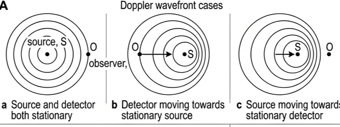
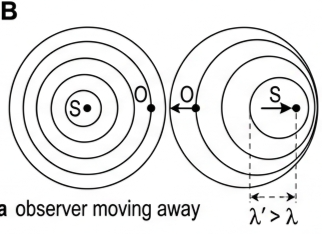
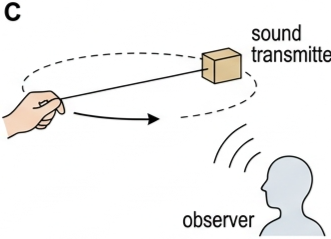
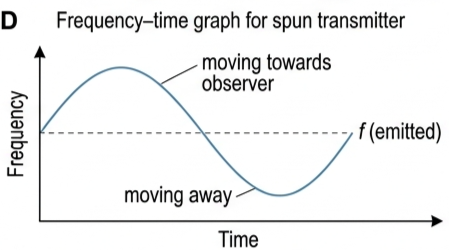
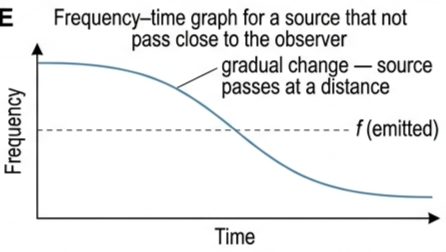
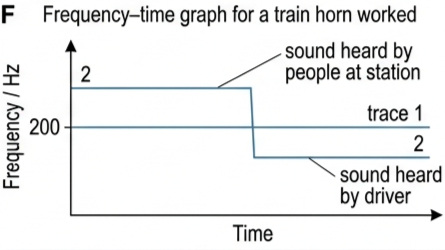
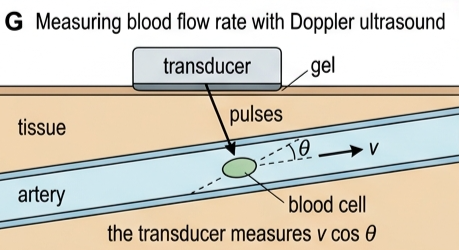
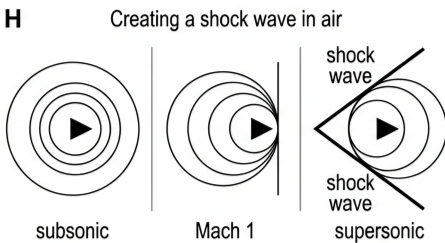
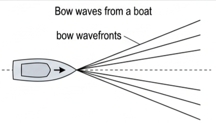

🎯 Hook – the note that only you hear change
A train travelling at constant speed approaches a station where it will not stop. The driver sounds a warning horn of frequency 200 Hz and holds it right through the station. The driver hears one steady note the whole time; the people on the platform hear a high note that suddenly drops as the train passes. Nothing about the horn changed — only the relative motion did.

📐 What is the Doppler effect?
The Doppler effect is the name given to a phenomenon that is observed when there is relative motion between a source and an observer of waves. The term ‘observer’ is used here to represent the person, or the device, receiving waves — of any type. The Austrian physicist Christian Doppler first identified in 1842 the effect that bears his name.
When there is relative motion between a source of waves and an observer, the waves received by the observer will have a different frequency (and wavelength) than the waves emitted by the source.
Because the wave speed \(v\) is constant, these two relations do all the work: change the spacing of the wavefronts and you change the received frequency, and vice versa.
📐 Reading the wavefront diagrams
The easiest way to explain the Doppler effect is by drawing wavefronts. Figure C5.1a shows the common situation in which a stationary source, S, emits waves that travel towards a stationary observer, O, with the same speed in all directions. Figure C5.1b shows an observer moving directly towards a stationary source, and Figure C5.1c shows a source moving directly towards a stationary observer.
Observer moving towards a stationary source (C5.1b). The observer will meet more wavefronts in a given time than if it remained in the same place, so the received frequency, \(f'\), is greater than the emitted frequency, \(f\). Since \(\lambda = v/f\) and the wave speed \(v\) is constant, the received wavelength will be less than the emitted wavelength.
Source moving towards a stationary observer (C5.1c). The distance between the wavefronts — the wavelength \(\lambda\) — between the source and the observer is reduced, which again means that the received frequency will be greater than the emitted frequency, because \(f = v/\lambda\) and the wave speed \(v\) is constant.
Similar diagrams can be drawn to represent the situations in which the source and detector are moving apart: the wavefronts reaching the observer are then further apart, so the received frequency is lower than the emitted frequency.

🔔 Doppler effect for sound waves
The most common everyday examples of the Doppler effect are with sound, but the effect is usually only noticeable if the sound is loud and the movement is fast — from a moving vehicle, for example.
Figure C5.2 shows a way in which the Doppler effect with sound can be demonstrated. A small source of sound, of a single frequency, is spun around in a circle. When the source is moving towards the observer a higher frequency is heard by the observer; when it is moving away, a lower frequency is heard.

The speed of sound through air depends only on the physical properties of the air. It does not vary with the motion of the source, or of the observer. However, the speed with which sound passes a moving observer depends on their relative speeds. For example, a sound travelling away from a stationary source at 340 m s⁻¹ will pass an observer who is moving directly away from the source at 200 m s⁻¹ with a speed of 140 m s⁻¹.
The most common and most easily understood examples of the Doppler effect for sound involve trains or cars moving quickly at a constant speed in an approximate straight line towards, or away from, a stationary observer. Many types of bats also use the Doppler effect to navigate.
📈 Graphs every examiner uses
| Graph type | Axes (X, Y) | Shape | What to read |
|---|---|---|---|
| Source passes observer | Time →, frequency ↑ | Horizontal high line, sudden vertical step down, horizontal low line | The step marks the instant of passing; both levels straddle the emitted frequency |
| Observer travelling with the source | Time →, frequency ↑ | Single horizontal line at the emitted frequency | No relative motion → no Doppler shift, so the driver hears 200 Hz throughout |
| Source spun in a circle | Time →, frequency ↑ | Smooth continuous oscillation about the emitted frequency, one cycle per revolution | Maximum when moving directly towards the observer, minimum when directly away, equal to \(f\) when moving across the line of sight |
| Source passing at a distance | Time →, frequency ↑ | Gradual S-shaped fall, no vertical step | A gradual change shows the source does not pass close to the observer |


✍️ Worked example C5.1 – train horn through a station
A train travelling at a constant speed approaches a station where it will not stop. The driver of the train sounds a warning horn, of frequency 200 Hz, as the train approaches and then passes through the station. Sketch graphs (on the same axes) to show how the frequency heard by: (a) the driver varies with time; (b) the people at the station varies with time.
(b) Approaching, the wavefronts reaching the station are compressed, so \(f' > 200\ \text{Hz}\) and constant while the speed is constant. Because the train passes directly by, there is a sudden frequency change as it passes, after which \(f' < 200\ \text{Hz}\) and again constant.

🩺 Real-world: measuring blood flow
The measurement of the rate of blood flow in an artery is an application of the Doppler effect for sound (ultrasound). Pulses of ultrasonic waves are sent into the body from the transducer — a general term for any device which converts another form of energy into, or from, electrical energy — and are reflected back from blood cells flowing in an artery. The received waves have a different frequency because of the Doppler effect, and the measured change of frequency can be used to calculate the speed of the blood flowing in the artery. This information can be used by doctors to help to diagnose many medical problems.
Because the waves usually cannot be directed along the line of blood flow, the calculated speed will be the component \(v\cos\theta\).

🚀 Nature of science – breaking the sound barrier
As an object, like an aircraft, flies faster and faster, the sound waves that it makes get closer and closer together in front of it. When an aircraft reaches the speed of sound, at about 1200 km h⁻¹, the waves superpose to create a shock wave.
An aircraft at the speed of sound is said to be travelling at ‘Mach 1’, named after the Austrian physicist Ernst Mach. Faster speeds are described as supersonic, and twice the speed of sound is called Mach 2, and so on. The shock wave travels away from the side of the aircraft and can be heard on the ground as a sonic boom.

For many years some engineers doubted if the sound barrier could ever be broken. The first confirmed supersonic flight with a pilot was in 1947. Now it is common for military aircraft to travel faster than Mach 1. Concorde and Tupolev 144 were the only supersonic passenger aircraft in regular service, but their use has been discontinued. There are plans to introduce a new supersonic passenger aircraft before the year 2030.
It is possible to use a whip to break the sound barrier. If the whip gets thinner towards its end, then the speed of a wave along it can increase until the tip is travelling faster than sound in air. The sound it produces is often described as a whip ‘cracking’.
⚠️ Trap corner – common mistakes
| Misconception | Correct view |
|---|---|
| “Sirens are Doppler, so every change in a siren's sound is Doppler.” | Sirens genuinely show the Doppler effect, but they also emit sounds of varying frequency and loudness, which should not be confused with the Doppler effect itself. |
| “A moving source changes the speed of sound in the air.” | The speed of sound through air depends only on the physical properties of the air. It does not vary with the motion of the source, or the observer. |
| “The frequency heard always changes gradually.” | Motion directly towards or away gives a sudden change of frequency at the moment of passing; the change is gradual only if source and observer do not pass close to each other. |
| “The driver sounding the horn hears the shift too.” | There is no relative motion between driver and horn, so the driver hears the emitted frequency (200 Hz) unchanged. |
| “The ultrasound frequency change gives the blood speed directly.” | The beam is at an angle \(\theta\) to the flow, so the measurement gives \(v\cos\theta\) — less than the true speed \(v\). |
Complete the statements:
✓ Observer O drawn to one side with an arrow pointing directly away from S; O therefore meets fewer wavefronts per second, so f′ < f (wavelength in the medium unchanged).
(b) ✓ Wavefronts drawn as circles whose centres shift away from O, so the spacing between wavefronts on the side towards O is increased.
✓ Arrow on S pointing directly away from O, with λ′ > λ marked between two wavefronts on O's side, giving f′ < f since f = v/λ and v is constant.
(a) State whether the detected frequency will be higher, or lower, than 6.0 MHz. Explain your answer. [2 marks]
(b)(i) Explain why a calculation based only on the frequency change predicts that the blood speed in an artery is lower than its true value. [2 marks]
(b)(ii) If the patient has a medical problem affecting blood flow rate, predict what effect this will have on the frequency measurements. [2 marks]
(c) Suggest what properties of ultrasound make it useful for this medical examination. [3 marks]
✓ The reflecting blood cells are moving relative to the transducer, so the wavefronts returning from them are compressed — the received frequency is not the emitted frequency.
(b)(i) ✓ The ultrasound beam cannot usually be directed along the line of blood flow, so it makes an angle θ with the flow.
✓ Only the component of the blood velocity along the beam, \(v\cos\theta\), produces the frequency change, and \(v\cos\theta < v\), so the speed obtained is below the true value.
(b)(ii) ✓ A problem that reduces the flow rate (for example a partial blockage) gives a smaller speed component, so a smaller frequency change than expected for a healthy 10 cm s⁻¹ flow.
✓ A problem that increases the flow speed (for example a narrowing that speeds the blood up) gives a larger frequency change; either way the measured shift differs from the healthy value, which is what makes the scan diagnostic.
(c) ✓ Ultrasound is non-ionising, so it does not damage tissue at these intensities — the scan is safe and non-invasive.
✓ It is reflected at boundaries inside the body and by blood cells, so a measurable echo returns to the transducer.
✓ Its short wavelength (high frequency, 6.0 MHz) allows small structures such as an artery to be resolved, and the frequency shift for a 10 cm s⁻¹ flow is large enough to measure.
✓ A smooth, continuous curve oscillating above and below f, completing exactly one cycle in the time for one revolution.
✓ Maximum where the source moves directly towards the observer, minimum where it moves directly away, and equal to f where the motion is across the line of sight — no sudden steps, and no numerical scales required (Tool 3).
(a) Describe the overall shape of the wave fronts. [2 marks]
(b) Explain why bow waves similar to these can cause damage to the surroundings if the boat is close to shore. [3 marks]
✓ The wavefronts are bunched close together in front of and beside the boat and spread out behind, because the boat moves a significant distance between emitting successive wavefronts.
✓ (b) Because the boat travels at a speed comparable with the wave speed, successive wavefronts superpose along the edges of the V, producing a wave of large amplitude.
✓ Large amplitude means large energy transfer, and the energy is concentrated along the wedge rather than spreading over widening circles.
✓ Close to shore this concentrated energy strikes banks, moored boats and structures, so erosion or impact damage can result.
(a) On one pair of axes, sketch how the frequency heard by the driver and the frequency heard by the people at the station vary with time. [3 marks]
(b) Explain, in terms of wavefronts, why the frequency heard at the station falls suddenly rather than gradually. [2 marks]
✓ Driver: a single horizontal line at 200 Hz, labelled “sound heard by driver” — no relative motion, no shift.
✓ Station: horizontal above 200 Hz, a vertical drop at the moment of passing, then horizontal below 200 Hz, labelled “sound heard by people at station”.
✓ (b) While approaching, the wavefronts reaching the station are compressed by a constant amount, so f′ is constant and above 200 Hz.
✓ The motion is directly towards and then directly away from the observers, so at the instant of passing the compression is replaced by stretching — the change of frequency is sudden. It would be gradual only if the train did not pass close to them.
